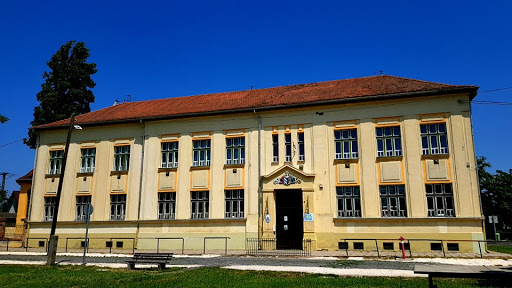

Telefon:+36 70 212 4442
E-mail:sallai.marcell69@gmail.com
Születési hely:Kiskunfélegyháza
Születési idő: 2001.11.20.
Állampolgárság: magyar
Szegedi Deák Ferenc Gimnázium:(2016-2020) http://www.dfg-szeged.hu/
School of business:(2020-) http://sobszeged.hu/
Labdarúgás:Versenyszerűen
Egyéb sportok. pl:(Röplabda, kosárlabda)
anyagi függetlenség
rendszeres sportolás a mindennapokban
Elhelyezkedni olyan területen (munka), amit szeretek csinálni